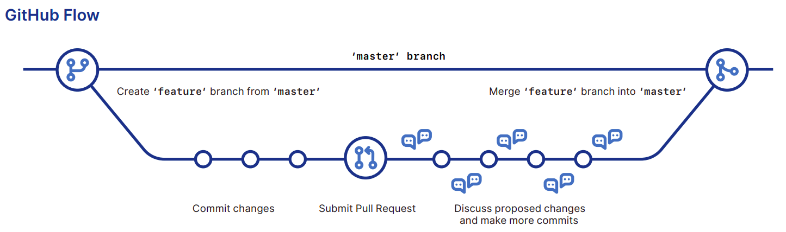

A very short intro to Git and GitHub
Morgan Davidson
Created: 2022-04-12 mar. 12:35
1 Agenda
- Agenda
- Fast facts
- Git & GitHub
- Documentation
2 Fast facts
2.1 Git
- A distributed version-control system for tracking changes in any set of files
- Open source
- Cross plateform
- Created by Linus Torvalds
- in 2005
- By far the most widely used source-code management tool
2.2 GitHub
- Hosting for software development and version control using Git
- Founded in 2008
- subsidiary of Microsoft since 2018
Mascot : Octocat

3 Git & GitHub
3.1 Git install
sudo snap install git-ubuntu --classic
3.2 Git config
Add your user name:
git config --global user.name "your_username"and your email address:
git config --global user.email "your_email_address@example.com"
3.3 Clone a remote repo with Git
$ cd ../your_git_project_folder
$ git init
$ git clone http://github.com/projectaddress
| Concept/Commands | Explanation |
|---|---|
| Local repo | A Git repository (repo) on your computer |
$ git init |
Creates an empty Git repository on your computer (i.e. a local repo) |
$ git clone <url> |
Creates a copy of some GitHub project on your local repo through Git |
origin |
an alias (for an url) on your system for a particular remote repo |
3.4 Create a GitHub account
3.5 Push a file with Git
Commands:
$ touch test.txt $ git add test.txt $ git commit $ git pushCommand Explanation $ git add iadd changes we made to file ito the Git staging area.$ git commitStores the content of the index in the local repo along with a log message describing the changes. $ git pushUpload changes from local repo to remote repo
3.5 Push a file with Git
Workflow:
WORKSPACE ―――――――▷ INDEX ―――――――――――――▷ LOCAL REPO ――▷ REMOTE REPO $ touch test.txt ▷ $ git add test.txt ▷ $ git commit ▷ $ git pushWorkflow steps
Concept Explanation Workspace1 Local checkout of your code. Index2 Before you "commit" files, you need to first add them to the index. Remote repo3 Git repo hosted on the internet (e.g. on GitHub).
3.6 Branching on Git & GitHub plull requests
| Concept/command | Explanation |
|---|---|
| Master branch | Main branch |
| Branching | Allows to develop new features without affect main branch |
$ git checkout |
Switch to a specific branch |
$ git branch |
List all existing branches |
$ git branch i |
Creates a new branch called i |
$ git merge i |
merge i branch to main branch |

3.7 GitHub forking
| Concept | Explanation |
|---|---|
| Forking | Creating a copy of some GitHub project into your own GitHub namespace |

Figure 3: Example of a collaboration architecture
3.8 Other Git important commands
| Concept | Explanation |
|---|---|
$ git pull |
Update local repo with the new changes in the remote repo |